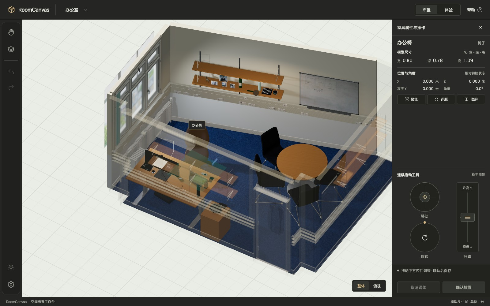
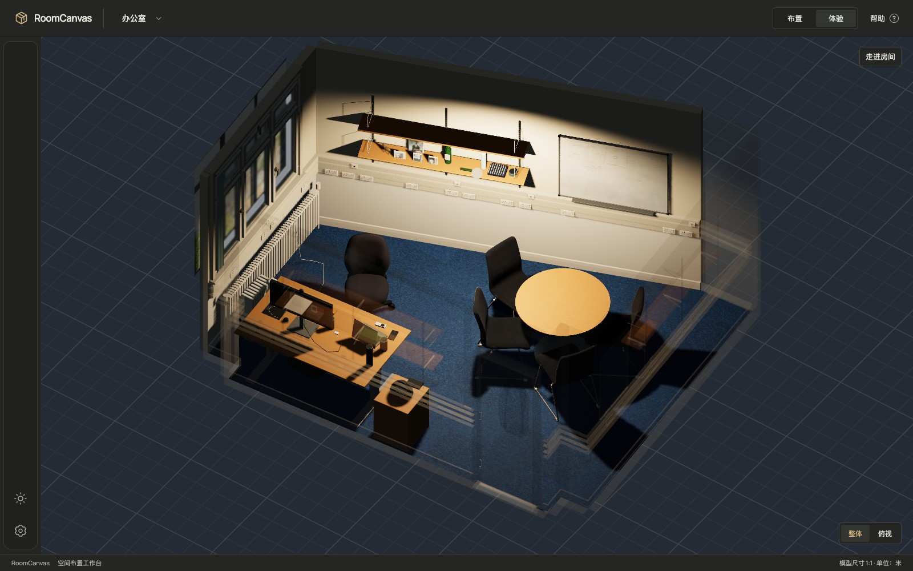
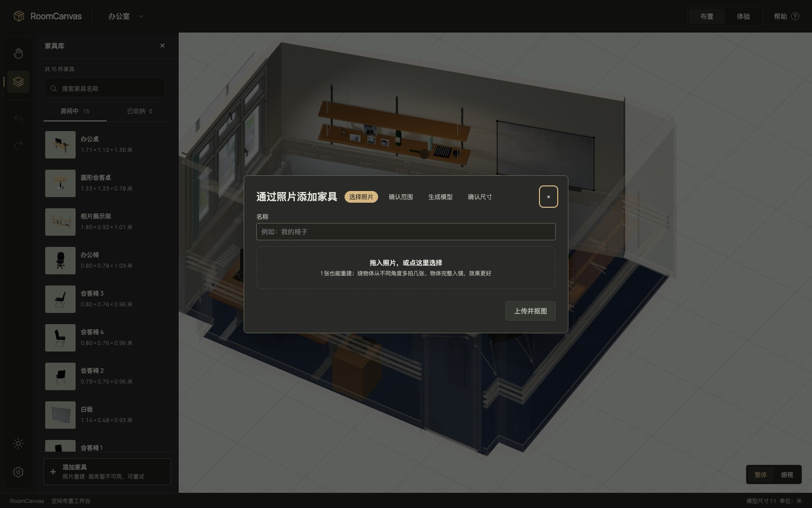
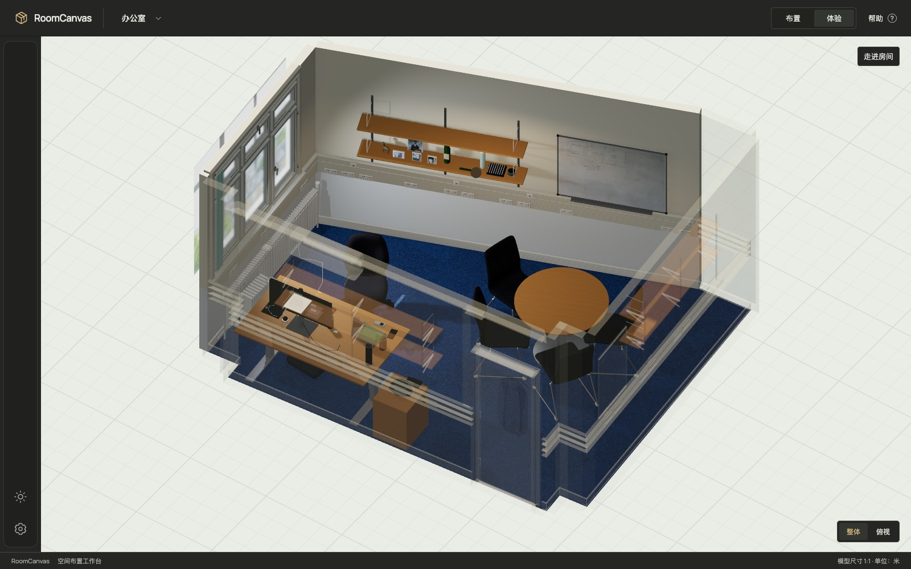

双手，也是控制器。
左手切换模式，右手捏合调整家具，竖起拇指确认放置。摄像头由你手动开启，画面在本机浏览器内识别。
手势操作指南 ↗扫描你的房间，
在浏览器里按真实尺寸重新布置。
把现实空间变成可编辑的三维画布。挪一张桌子、换一个角度，让下一次改变，先在 RoomCanvas 里发生。
移动、旋转、升降，或把家具收起再放回。每次调整都有预览，确认之后才保存。

试试早晨、中午、下午与夜间的光照，再打开中央顶灯。家具的摆法，值得在不同光线里看一看。

时段光照是氛围预设，不是基于地理位置的真实日照模拟。
拍几张物品照片，上传、确认抠图、完成重建，再用一条实测边长标定尺寸。新东西，也能以真实大小出现在房间里。


房间、物品、交互，各自独立，又在同一张画布里相遇。
iPhone LiDAR + RoomPlan 扫描
物品照片 + 一条实测边长
LiteReality 房间重建
物品重建与尺寸标定
Three.js 场景编辑
MediaPipe 手势识别
Room.glb三维模型room_objects.json物品与关节信息运行现成的示例房间，只需要 Python 3。网页编辑器无需构建；连接重建服务是下一步。
git clone https://github.com/innovationasuna/RoomCanvas.git
cd RoomCanvas
python3 web/scripts/serve.py仓库目前需要访问权限；请使用已获授权的 GitHub 账号克隆。
使用、部署、开发，每一步都有对应的文档。
文档位于项目 GitHub 仓库，需要相应访问权限。
没有 GPU，也能用吗？ 可以。浏览器可以直接布置已有示例；重建新房间和物品需要另外连接 GPU 后端。
摄像头画面会上传吗？ 编辑器内置手势在本机浏览器识别，画面不上传。只有你主动开启时才使用摄像头。
普通照片能重建整屋吗？ 当前整屋流程需要 LiDAR + RoomPlan 的完整扫描数据。普通照片用于单个物品的重建。
布置结果保存在哪里？ 确认后的布局保存在当前浏览器，也可以导出 JSON 备份，或导入已有布局。